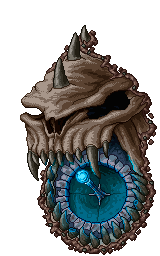

O dia 7 de janeiro de 2022 marca o aniversário de 25 anos de Tibia, MMORPG criado e publicado pela alemã CipSoft, que fez enorme sucesso no mundo todo, especialmente no Brasil. O jogo ficou famoso não apenas por ser de graça, mas também por apresentar gráficos super simples, para funcionar em qualquer computador mais modesto desde seu início. Para comemorar a data a produtora anunciou ainda outra novidade: atualização que adicionará efeitos sonoros.
Vem aí a forja para upgrade de itens
O próximo Winter Update introduzirá a Exaltation Forge, uma
maneira de acessar novos efeitos poderosos. Para usar esse
sistema, os jogadores precisarão de novos recursos.
|
 |
Novos familiares ( Snowbash , Sandscourge , Mossmasher , Bladespark ) também podem ser adquiridos na próxima atualização de inverno, um para cada vocação. Ele será então adicionado ao seu já existente e, apesar de parecer completamente diferente da antiga criatura invocada, não mudará a mecânica de sua poderosa convocação. O familiar agora pode ser visualizado e selecionado na caixa de diálogo "Personalizar personagem", embora não possa ser colorido. Os nomes dos feitiços serão alterados para (evocar) Familiar do Cavaleiro, (evocar) Familiar do Paladino, (evocar) Familiar do Feiticeiro e (evocar) Familiar do Druida. Os familiares que um personagem possui podem ser vistos na aba de personagens da Cyclopedia, em "Aparências". Eles também serão exibidos no Char Bazaar.